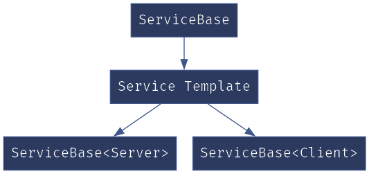

Loading...
Searching...
No Matches
CAN bus Library
CAN (Controlled Area Network) Protocol
CAN (Controlled Area Network) Protocol is a way of communication between different devices, but under certain rules.
These rules must be followed when a message is transmitted over the CAN bus. Here we are going to see these rules.
Shown below is the Standard CAN Frame

- Here, Identifier is the ID of the transmitting Device
- RTR (Remote Transmission Request) Specifies if the data is Remote frame or Data frame.
- IDE specifies if we are using Standard ID or Extended ID
- r is the Reserved bit
- DLC specifies the data length in Bytes
- Data Field is where we can send the data, which should be up to 8 bytes
- Checksum and DEL are the CRC data and it’s Delimiter
- ACK and DEL is the acknowledgment bit and it’s Delimiter
In this Tutorial, we will see up to the Data Field only. The CRC and ACK will be handled by the HAL Library.
Class diagram

Class Diagram